<>
ATARI TOUCH ME
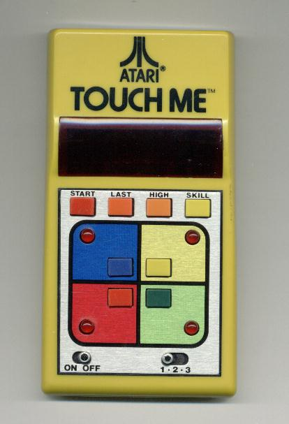
Pierwsza konsola typu hand-held. Powstała w 1978r. Prosta gierka polegająca
na przyciskaniu sekwencji klawiszy według zadanego wzoru. Diody świecące na kolorowych polach
zapalają się w określonej kolejności. Gracz musi powytórzyć tę kolejność naciskając odpowiednie
klawisze. Najpierw zapalają się kolejno dwie diody. Każda następna sekewencja jest dłuższa od
poprzedniej o jeden. Udało mi się powtórzyć dziesiątą sekwencję zanim straciłem zainteresowanie.
Konsola zasilana jest z baterii 9V.
ATARI PONG
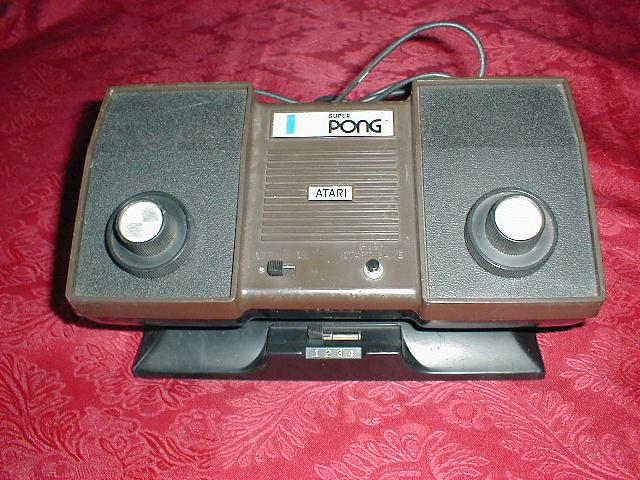
Konsola - legenda C-100 PONG była grą telewizyjną popularną w połowie
lat 70-tych ub. wieku. Na zdjęciu przedstawiona jest konsola C-140 SUPER PONG, różniąca się od
poprzedniczki dodatkowym przełącznikiem rodzaju gier, miała ich bowiem 4. Przełącznik widoczny
jest na dole po środku. Dwa pokrętła to tzw. paddle (paletki bądź rakietki, a nie wiosełka, jak to kiedyś
przetłumaczył Bajtek), które później się "usamodzielniły".
ATARI VIDEO PINBALL
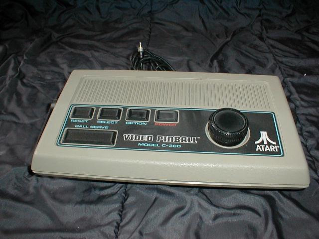
Atari C-380 Video Pinball to kolejna wersja Ponga przeznaczona dla jednego gracza.
Miała wbudowane 4 gry i kolorową grafikę.
ATARI 2600
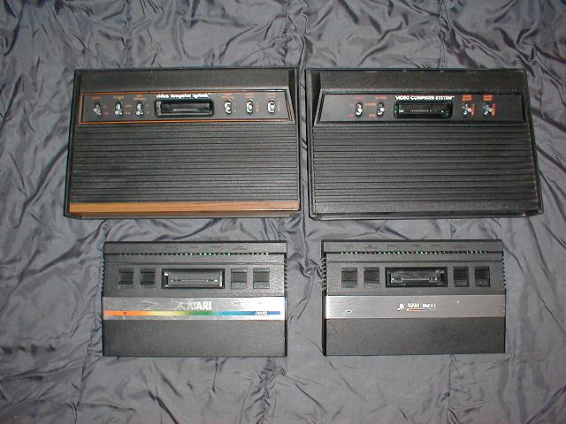
ATARI 2600 to chyba najpopularniejsza konsola komputerowa. Powstała w 1977r, po
udostępnieniu licencji produkowana w postaci bardzo wielu
klonów z wbudowanymi grami. ATARI 2600 produkowane były w dwóch wersjach: 2600
(góra z lewej) i 2600A (góra z prawej) i 2600 Junior (dwa rodzaje na dole) i działały wyłącznie po włożeniu kartridża.
Procesor 6507 (uproszczona wersja 6502) z zegarem 1.19MHz.
RAM 128B zawarta w układzie VLSI 6532.
ROM - max. 4KB bez dodatkowych układów, 8KB z układem przełączania banków.
Procesor graficzny TIA (CO10444D-NTSC, CO11903-PAL)
Rozdzielczość - ?
2 gniazda dżojstika, gniazdo kartridża, wyjście TV, zasilanie 9V 500mA DC.
Wbudowany generator dźwięku.
Do tego typu konsol wykonano jeden prototyp klawiatury dołączanej przez gniazdo kartridża. Proponowana nazwa "The Graduate"
(Absolwent).
Ciekawostka: Do Atari 2600 można było podłączyć magnetofon za pomocą specjalnego kartridża Supercharger firmy Arcadia. Zaopatrzony był on w przewód zakończony wtykiem mini jack, który podłączało się do wyjścia słuchawkowego zwykłego monofonicznego magnetofonu kasetowego. Na rynku amerykańskim można jeszcze znaleźć kasety z programami wczytywanymi przez ten kartridż. Oto jak wygląda to urządzenie:
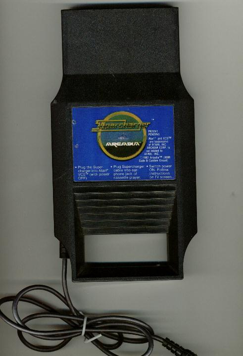
ATARI 5200
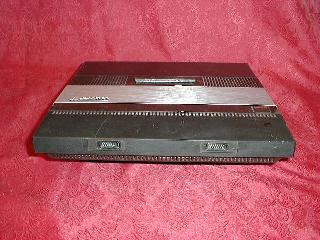
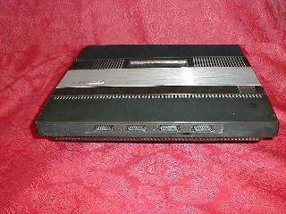
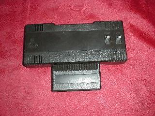
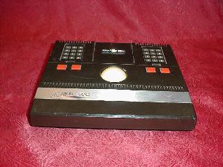
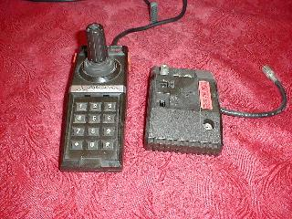
Zdjęcia górne przedstawiają konsole Atari 5200 2-portową (z lewej) i 4-portową (z prawej).
W środku po lewej znajduje się adapter dla kartridży od modelu 2600, po prawej zaś trakball
stosowany zamiennie z dżojstikiem (zdj. dolne). Obok dżojstika widać adapter do podłączenia zasilania do
modelu 4-portowego.
Procesor 6502
RAM 16kB
ROM 4kB
Procesor graficzny ANTIC i GTIA
Rozdzielczość max. 320 X 192
Grafika i kolory jak w Atari 400/800
Tryby tekstowe niedostępne.
Dźwięk: czterokanałowy generator POKEY.
Produkowane w dwóch typach: z czterema i z dwoma gniazdami
joysticka. Joystick potencjometryczny (paddle) z klawiaturą numeryczną. Do
wersji 2-portowej oraz zmodyfikowanej 4-portowej (oznaczonej gwiazdką
przy numerze seryjnym) dostępny był adapter do kartridży od Atari2600.
ATARI 7800
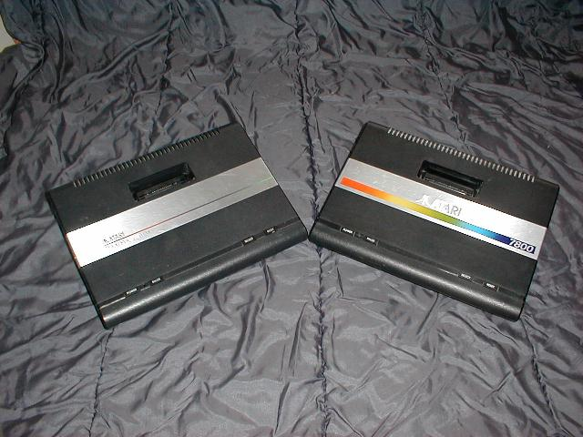
Atari 7800 to kombajn powstały z połączenia Atari 5200 i 2600 z
pewnymi modyfikacjami (2600+5200=7800). Oto dane wersji PAL (foto z prawej).
Procesor 65C02
RAM 4kB (statyczna)
ROM 32kB
Procesor graficzny 9011 i TIA
2 gniazda dżojstika 9-pin, wyjście TV i gniazdo kartridża.
Pasują tu również kartridże z Atari 2600.
ATARI LYNX
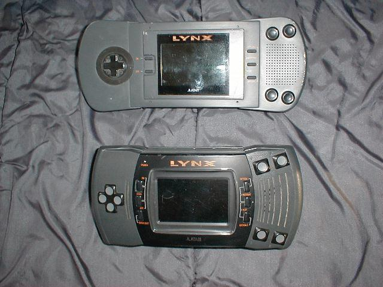
Konsole Atari Lynx MK I (górna) i Lynx MK II (dolna)
Pierwsza w świecie konsola hand-held firmy Atari pojawiła się na rynku w 1989r.
Sercem konsoli jest procesor 65C02 taktowany zegarem 4MHz zawarty w układzie Mikey.
RAM 64kB / 120ns
ROM 512B
Max. pojemność katrtidża 2MB
Kolorowy wyświetlacz ciekłokrystaliczny 160 X 102.
Jednocześnie wyświetla 16 kolorów z palety 4096.
ATARI JAGUAR
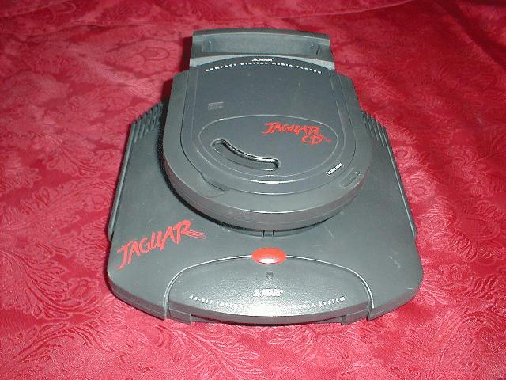
Zdjęcie przedstawia konsolę Jaguar z zamontowanym modułem CD-ROM.